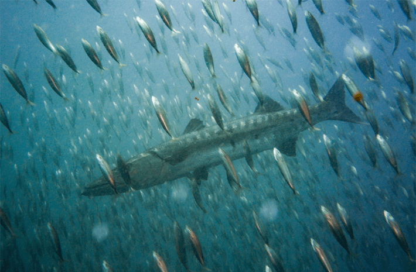

In the cold waters of the Pacific, the anchoveta once shimmered in swarms so vast that sailors described them as turning the sea into a river of quicksilver. They were small, unassuming fish, yet the abundance of the ocean rested upon their delicate bones. Seabirds wheeled overhead in their millions, sea lions and whales dove into their depths, and predatory fish rose through the blue to feed on them. In those shoals lived the vitality of the sea itself. But in our age, the anchoveta, along with sardines and menhaden, have been transformed from living threads in an ancient web into bags of meal and casks of oil. Ninety percent of the forage fish caught by human hands are not eaten by us but ground down to feed salmon being raised in the cold fjords of Norway and shrimp and fish in the tropical ponds of Southeast Asia.
It is one of the great ironies of our time. To farm the sea, we strip the sea. We take from the ocean’s foundation to build its surface anew, and in the process we imperil both. In 2016, the anchoveta failed to arrive in the expected numbers, and entire fishing seasons in Peru were canceled. Again in 2023, the same collapse occurred, this time coinciding with a spike in ocean temperatures that drove the fish to depths where nets could not reach. The seabirds starved, their nests abandoned. Seal pups died in the thousands. Farmers watched as the price of feed climbed and their livelihoods faltered. What seemed infinite revealed itself as fragile.
Kevin Fitzsimmons, an aquaculture scientist at the University of Arizona, has described the predicament with characteristic bluntness: “Reliance on wild-caught marine-animal ingredients is a weak link in the aquaculture supply chain. It puts global seafood security at risk, while also affecting vital marine ecosystems.” As the former president of the World Aquaculture Society, Fitzsimmons knows that what appears efficient on paper is brittle in practice.
Ninety percent of forage fish caught by humans are ground down into fish food.
Today, Fitzimmons is chairman of the F3 Challenge, a competition for the aquaculture industry to produce marine-animal free food for farmed fish. “Amid growing supply chain uncertainties, this contest offers an opportunity to future-proof farm operations by developing strong, sustainable feed contingency plans,” Fitzsimmons said. It is the voice of a scientist speaking, but also of a pragmatist who knows that disruption, like the sudden cancellation of Peru’s anchoveta fishery, will come again.
The paradox of aquaculture is that it is at once a salvation and a threat. It now provides more than half the fish we eat, and it has spared some wild stocks from further collapse. Yet the act of raising carnivorous fish—salmon, trout, grouper, shrimp—has bound us more tightly to the fragile shoals of forage fish. This is what scientists call the forage fish bottleneck. And in this bottleneck, the future of seafood, of food security for billions, of entire ocean ecosystems, is squeezed.
The realization that fish do not need to eat fish to grow—that what they require are nutrients, not the bodies of other creatures—may seem obvious once said aloud. But it is an idea as revolutionary as the day when humans first understood that plants could be sown in neat rows and harvested, that food could be cultivated rather than chased. The birth of agriculture 10,000 years ago was not the discovery of seeds; it was the recognition that sustenance could be abstracted, reimagined, shaped to our will. So too now, the future of fish feed begins with a recognition: The proteins and oils that have always come from the sea can come, instead, from our imagination.

BARRACUDA: Aquaculture has become a barracuda industry of the ocean, catching and mashing forage fish into feed for farmed seafood. Photo by Virgil Zetterlind.
When Fitzsimmons and his colleagues launched the F3 Challenge in 2015, they did not turn to governments to regulate or to foundations to endow. They chose instead the ancient spur of human ingenuity: a prize. “By incentivizing farms to innovate,” Fitzsimmons explained, “we reduce pressure on wild fish stocks while building a more resilient and sustainable seafood system for the future.”
History remembers moments like this. The prize offered for determining longitude at sea in the 18th century, which spurred clockmakers to craft chronometers more precise than ever imagined. The Orteig Prize, which drove Charles Lindbergh across the Atlantic, opening the era of aviation. Similarly, the F3 Challenge is not a discovery imposed from above, but a challenge flung wide, trusting that competition and ambition will drive a breakthrough.
And breakthroughs came. A Chinese company, Evergreen Feed, demonstrated that plant-based blends could scale to industrial volumes, saving an estimated 350 million forage fish. Veramaris, a joint venture in the Netherlands and the United States, cultivated algae that produced the same omega-3 fatty acids found in fish oil, and in quantities sufficient to replace billions of forage fish. In Ecuador and Japan, companies devised feeds for shrimp and sea bream, proving that even the most voracious of farmed carnivores could thrive without wild prey. Each success was counted not only in profit, but in the lives of the small fish left in the sea: hundreds of millions here, billions there.
The contests have continued, each more ambitious than the last. A challenge to replace krill, the shrimp-like creatures that sustain penguins and whales was won by BRF, a Brazilian company using Chicken hydrolysate, a product made by using enzymes to break down chicken protein into smaller, more easily digestible peptides, and by Symrise, a German company working with flavors and fragrances to enhance the non-marine food's appeal to farmed fish. A new competition now rewards not just feed producers but fish farms themselves, those willing to commit their entire operations to marine-ingredient-free diets. The ambition is not modest.
Labels on seafood could proclaim “fish-free feed,” like “grass-fed” on beef.
The tools of this new future are dazzling in their diversity. Algae fermenters that glow with green light, their oils rich in DHA (docosapentaenoic acid) and EPA (eicosapentaenoic acid), both types of omega 3 fatty acids identical to the molecules that give fish their nourishment. Tanks of bacteria fed on carbon dioxide or methane, spinning waste into protein, a kind of culinary alchemy. Insects—black soldier fly larvae—raised on food scraps, their bodies transformed into high-protein meal. Yeasts bubbling in vats like beer, dried into powders that rival fishmeal in digestibility. Even the humble pea and soybean, engineered and processed until their amino acid profiles mimic those of the anchoveta. Each of these is not simply a replacement, but a reinvention: a recognition that the fabric of nutrition is not bound to one source but can be woven anew.
To coordinate this frontier, the Future of Fish Feed, a collaborative effort between NGOs, researchers, and private partnerships to support alternative aquaculture feed, created the Feed Innovation Network, an open commons where recipes are shared, protocols exchanged, trials published. In an industry long bound by secrecy, this openness is itself a revolution. And in farms across the world, from shrimp ponds in Ecuador to bass tanks in the U.S., demonstration trials show that these diets work. Carnivores remain carnivores, and yet the ocean remains more whole.
At stake is more than the price of shrimp or the yield of salmon. It is the resilience of entire ecosystems. Forage fish are the currency of the sea. To deplete them is to starve seabirds, to silence the calls of whales, to empty the beaches of seals. To spare them is to let the ocean breathe. At stake, too, is human food security. By mid-century, 10 billion mouths will need feeding, and aquaculture is one of the surest ways to provide protein. But if aquaculture is shackled to the rise and fall of forage fish, then it will falter when most needed. And finally, at stake is the climate itself. If bacteria can be grown on carbon waste, if algae can thrive on light and air, then aquaculture can become not a burden but a partner in the work of repairing the planet.
One can already imagine the cultural shift that might follow. Labels on seafood proclaiming “fish-free feed,” just as beef carries the words “grass-fed.” A shrimp cocktail served at a wedding, its story not of plundered krill but of innovation, of microbes turned to nourishment. The act of eating fish would carry with it a continuity, not a rupture, with the health of the sea.
And here, perhaps, lies the deepest resonance. Human history is a succession of moments when we recognized that our survival depended not on taking more from nature, but on working with her patterns. Agriculture, fire, medicine, electricity—all arose from this recognition. The F3 Challenge is another of those moments. It is not about feed alone. It is about the imagination to see that the scaffolding of life can be rebuilt by our own hands, if only we choose to do so.
Today, the anchoveta still swim, though in fewer numbers, and the seabirds still wheel above them. But their future, like ours, now depends on whether we will grind them into meal until none remain, or whether we will let them remain what they have always been: the living silver of the sea. “Our shared future becomes more sustainable,” Fitzsimmons said, “only if we can learn to take the pressure off the oceans and create feeds that free us from this dependence.” The future of fish feed is the future of fish. And the future of fish is the future of us all. 
Lead image: A salmon farm in Norway. Credit: Photofex_AUT / Shutterstock.